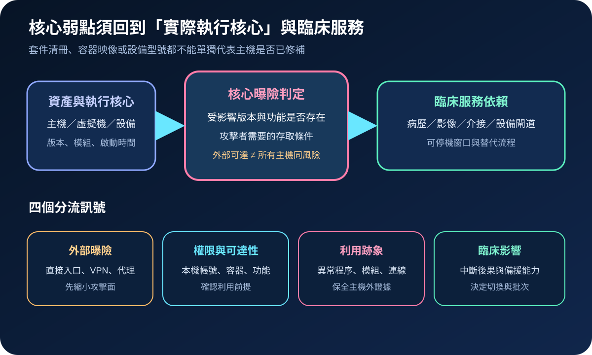
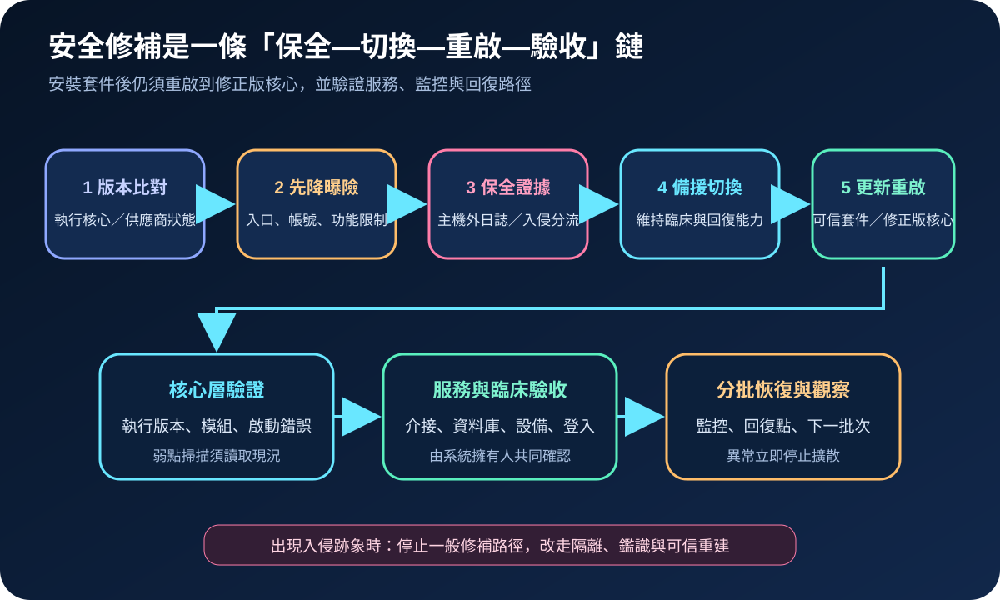
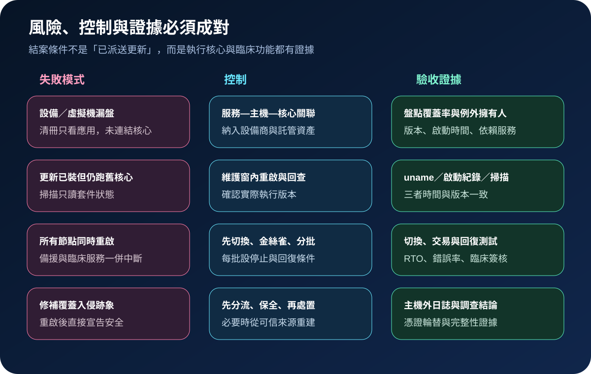

醫療資安國際觀察 · 2026-09-19
Linux 核心漏洞已遭利用時，醫院如何安全修補：從工作負載盤點到重啟驗證
作者：Dr. William｜醫療資訊與資安治理實務工作者
醫院的病歷、影像、介接、身分與設備閘道常依賴 Linux。核心漏洞進入已知遭利用清單後，處置不能停在派送更新；必須確認實際執行的核心、利用前提、入侵跡象，以及重啟後的臨床功能。
名詞解釋：核心套件與執行核心並非同一狀態
Linux 核心管理記憶體、程序、網路與硬體；競爭條件是並行操作導致不一致狀態；越界寫入是資料寫到預定範圍之外；KEV則是 CISA 依主動利用證據維護的清單。主機安裝修正版套件後，若尚未重啟，仍可能執行舊核心。容器共享宿主核心，也不能只看容器映像判定。
國際現況與適用邊界
CISA 於 2026 年 9 月 18 日分兩則警示，將 CVE-2025-39964、CVE-2026-53266 與 CVE-2025-39682 納入 KEV，分別涉及 Linux 核心的競爭條件、越界寫入及例外狀態檢查。Ubuntu 的個別 CVE 頁面顯示，各發行版、核心分支與套件狀態並不一致；例如 CVE-2026-53266 在 Ubuntu 的優先級為 High，部分支援版本於查閱時仍標示 vulnerable 或 work in progress。這些訊號要求逐一比對供應商版本，不能把單一發行版狀態套用到所有 Linux 系統。
法域與適用邊界：CISA BOD 26-04 與 KEV 到期日適用美國聯邦文職行政機關的指定情境，不是台灣醫療機構的法定期限。CISA 的主動利用證據也不代表每台 Linux 主機都可由外部直接利用；台灣機構應依核心分支、功能、帳號權限、網路路徑與臨床影響完成判定。
規劃：以臨床服務為單位建立核心修補批次
清冊須連結實體主機、虛擬機、容器宿主、醫療設備內嵌系統、執行核心、供應商支援狀態及依賴服務。系統擁有人定義可停機窗口與臨床驗收；基礎架構團隊執行切換、更新與回復；資安單位判定利用跡象並保存主機外證據；設備商則確認受管設備可用的修補或補償控制。驗收指標可包含核心盤點覆蓋率、已重啟修正版比例、逾期例外、服務測試通過率及回復演練結果。

實作：分流調查、修補與臨床持續運作
- 比對：從執行核心與已載入模組確認受影響範圍，並以發行版或設備商公告判斷修正版，不只比對上游版號。
- 降曝險：縮小外部入口、本機帳號、容器能力與不必要核心功能；無法立即更新的設備採網路限制及加強監控。
- 保全：保存程序、網路、認證、核心與端點遙測至獨立權限域。若有入侵跡象，改走隔離、鑑識與可信重建。
- 分批：先驗證備援與回復條件，再以金絲雀節點更新、重啟、觀察，通過後才擴大批次。
- 驗收：核對執行核心、啟動紀錄、模組及掃描結果，並測試登入、資料庫、介接、醫療設備連線與監控告警。
風險：快速重啟與延後重啟都可能擴大臨床衝擊
全面同時重啟可能讓高可用節點一起離線；只更新不重啟則留下舊核心。未受支援的設備若直接套用一般套件，還可能破壞認證或醫療功能。處置應設定每批停止條件、回復點及臨床簽核；無供應商修補時，例外必須有期限、擁有人、補償控制與替代計畫。修補也不能取代入侵調查，異常帳號、程序或連線須另行結案。

可執行清單
- 能否列出每項臨床服務所在主機及目前執行核心？
- 是否依發行版、核心分支與設備商公告判定，而非只看通用 CVE？
- 安裝後是否確認已重啟到修正版核心？
- 高可用節點是否分批處置，且每批都有停止與回復條件？
- 是否在修補前保存主機外日誌並完成入侵跡象分流？
- 例外主機是否具期限、擁有人、補償控制與退場路徑？
來源
- CISA｜CISA Adds Two Known Exploited Vulnerabilities to Catalog（發布：2026-09-18；查閱：2026-09-19）
- CISA｜CISA Adds One Known Exploited Vulnerability to Catalog（發布：2026-09-18；查閱：2026-09-19）
- Ubuntu｜CVE-2026-53266（最後更新：2026-09-18；查閱：2026-09-19）
- Ubuntu｜CVE-2025-39964（最後更新：2026-09-10；查閱：2026-09-19）
- Ubuntu｜CVE-2025-39682（最後更新：2026-09-17；查閱：2026-09-19）
- NIST｜SP 800-40 Rev. 4: Guide to Enterprise Patch Management Planning（發布：2022-04；查閱：2026-09-19）
內容說明
本文依健康台灣深耕計畫相關治理內容整理，並參考 CISA、Ubuntu 與 NIST 公開資料，提出台灣醫療機構可採用的 Linux 核心曝險判定、分批修補與臨床驗收方法；不取代主管機關公告、法律意見、發行版或設備商文件、事件鑑識及個案臨床風險判斷。